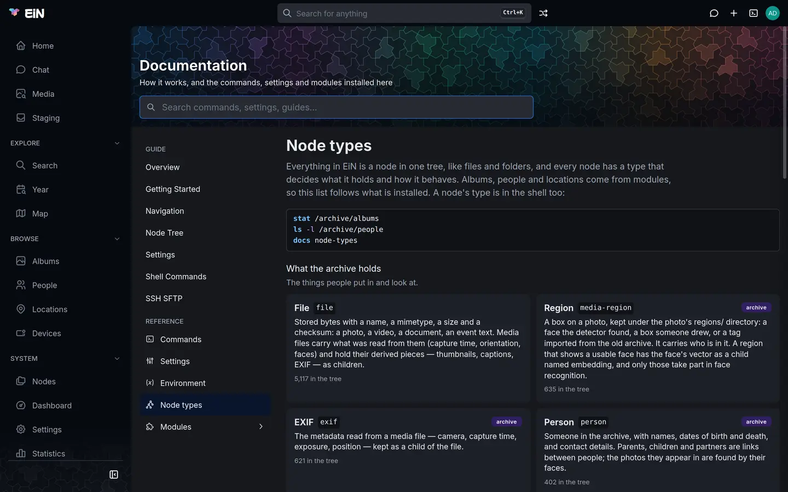

Everything EiN keeps is a node: a photo, an album, a person, an account, a log, a command. This
page takes one node apart, says what each part means and how to look at it in the web interface and
the shell, and explains what a node's type decides. It is for anyone who wants to understand what
they see in ls -l, in Nodes or in a node's Properties.
The examples come from the Wrenfield family's archive. Its paths, such as /archive/albums and
/archive/people, and the types album and person exist with the Archive
installed; what the page says about nodes is core's and holds for every type.
What a node is made of
Every node has the same five parts, whatever its type:
| Part | What it is | How to see it |
|---|---|---|
| Id | A fixed identifier of 26 letters and digits, given when the node is made. It stays the same when the node is moved or renamed. | info, stat |
| Type | A word that says what the node is: file, directory, album, person. Set when the node is made. |
info, ls -l |
| Properties | What every node has, as a file on a computer does: owner, group, mode, access list, times and link count. | props, ls -l |
| Attributes | What this node's type needs: a photo's size, checksum and capture time; a person's names and dates. | attrs |
| Name and place | The name the node has in the folder that holds it. A node does not store its own name; the folder does. | ls, find |
Some types also hold content: a file its bytes, a log its lines, a queue its messages, a position its shape on the map. And any node can hold children, a file included.
Take a photo from the Wrenfield family's album:
# in EiN's terminal
info /archive/albums/christmas-2019/20191225_155434.jpgid: 01JA7Q3M5X8R2C4V6B9N0P1T2W
type: fileThe path names the photo; the id names the node behind it. resolve-id goes the other way, from an
id back to the node's path:
# in EiN's terminal
resolve-id 01JA7Q3M5X8R2C4V6B9N0P1T2WLook at a node
In the web interface
The Nodes page browses the whole tree. It is in the sidebar under System, for administrators.
- Open System → Nodes.
- Go to the node, by its folders or by typing its path in the address bar.
- Choose Properties in the node's context menu, or press Alt+Enter.

The properties dialog has three tabs:
- General shows the node's Id, Type, Links, Created, Changed and Modified, a file's Mimetype and Size, a link's Link to, and the Mode, Owner and Group, which you can change there and save with Apply.
- Attributes shows the attributes, a Key and a Value to a row. If you may change the node, you can edit a row, remove it or Add one, and save with Apply, or Reset to go back to what is stored. The Attributes tab beside the listing shows them as JSON instead, saved with Save; when you may not change the node it says You can read these attributes but not change them.
- Sharing is the Share dialog's body; Permissions in depth explains it.
Everyone else meets nodes through the pages modules make for them: with the Archive, an album's page shows an album node
and the files in it, a person's page a person node and what links to it.
In the terminal
Five commands show a node, each a different amount of it. All of them take a path.
| Command | What it prints |
|---|---|
info |
The id and the type. |
props |
The properties. |
attrs |
The attributes. |
stat |
All of it: id, type, properties and attributes. |
ls -l |
One line for each node in a folder: type, mode, links, owner, group, size, time and name. |
info, props, attrs and stat print YAML with the keys in alphabetical order, and JSON with
JSON_OUTPUT=1 in front. A person's attributes, for example:
# in EiN's terminal
attrs /archive/people/Peggy_Wrenfieldborn: '1934-08-22'
died: '2021-01-17'
fullname: Margaret Wrenfield
gender: female
name: Peggy Wrenfieldls -l starts each line with the node's type, so it shows at a glance what a folder holds:
# in EiN's terminal
ls -l /archive/people/Peggy_Wrenfielddirectory rwxrwxr-x 1 admin users 2 14 Mar 2026 09:12:40 children
directory rwxrwxr-x 1 admin users 1 14 Mar 2026 09:12:41 partnersThe size column is a file's size in bytes, and for every other node the number of children it
has. A + after the mode says the node has an access list, and a link ends with -> and where it
points. Names that start with a dot are left out unless you add -a.
The command reference has every option of
stat, props,
attrs, info and
ls.
Properties
Properties are the same for every type. props prints them under these names:
| Property | General shows it as | What it is |
|---|---|---|
uid |
Owner | The account that owns the node, by number. |
gid |
Group | The node's group, by number. |
mode |
Mode | The permission bits, as chmod writes them: 0750 or rwxr-x---. props prints the number in decimal, so 0755 shows as 493. |
acl |
(the Sharing tab) | The access list: more users or groups, each with bits of their own. Absent when there is none. |
birthtime |
Created | When the node was made, and by whom. |
changetime |
Changed | When its properties last changed, and by whom. |
modtime |
Modified | When its attributes last changed, and by whom. |
count |
Links | How many folders hold the node. Usually 1; more when it has hard links. |
softlink |
Link to | Where a softlink points. Only on links. |
tier |
(beside Type) | Where a file's bytes are stored: disk, volatile or db. Fixed when the file is made. |
Each time is a pair of the account's number and the moment, in milliseconds since 1970. ls -l
shows the later of the changed and modified times, with owner and group by name.
Owner, group, mode and access list decide who may read or change the node.
Permissions in depth explains them and the commands that change them:
chmod, chown, acl and share-set. Links are explained in Links, and the tiers
in Files and storage.
Attributes
Attributes hold what a node's type needs, as JSON values: text, numbers, lists and objects. Each type has its own:
| Type | Attributes it carries, for example |
|---|---|
file |
name, mimetype, size, sha256; a photo also takenAt, its capture time |
person |
name, fullname, birthname, born, died, gender, contact, description |
album |
name, the title shown on its page, which may differ from the folder's name |
directory |
often none |
So /archive/albums/christmas-2019 is the album's path, and Christmas at the cottage, the
title on its page, is its name attribute.
Change an attribute
Change what a node means through the command or page made for it, when there is one: with the
Archive, give Peggy a death date with person-update --died=… or on her page, describe a photo with
file-set-description, and rename an album on its page. Those check the value and keep everything
that depends on it in step.
For anything else, attrs sets and removes attributes directly:
# in EiN's terminal
attrs -s 'birthname=Margaret Cole' /archive/people/Peggy_Wrenfield
attrs -J 'contact=[{"type":"phone","data":"01632 960 418"}]' /archive/people/Helen_Okafor
attrs -d contact /archive/people/Helen_Okafor-s key=valuesets an attribute to the text after the first=.-J key=valuesets it to a JSON value: a number,true, a list, an object. Invalid JSON is refused with invalid JSON for attribute 'key'.-d keyremoves it.
Each option may be given several times. The attributes you do not name are left as they are. The Attributes tab in Properties does the same from the web interface.
Content and children
A node's type decides whether it holds content, and of what kind. cat prints it:
| Type | Content |
|---|---|
file |
Its bytes: a photo, a video, a text. |
log |
Lines with a time each, kept for a retention period. |
queue |
Messages waiting to be read; reading one removes it. |
router |
Nothing kept: what is written reaches whoever reads now. |
position |
A point, a circle or an outline on the map. |
track |
Timestamped GPS points. |
embedding |
A numeric fingerprint, for similarity search. |
A directory, album or person holds no content, only attributes and children.
Children work the same for every type. With the Archive, a photo keeps what EiN works out about it beneath itself:
| Child | What it holds |
|---|---|
thumbnails/ |
Smaller renditions, a video's poster and storyboard |
metadata/exif |
The metadata read from the file, an exif node |
regions/ |
A media-region node for each face or box on the photo |
position |
Where the photo was taken, a position node |
# in EiN's terminal
ls /archive/albums/christmas-2019/20191225_155434.jpgDeleting a node deletes its children with it: rm refuses a node that has children unless you
add -r. Names are unique within a folder, so a folder cannot
hold two children of the same name. How the tree is laid out, folder by folder, is in
The tree.
What a node's type decides
The type is a plain word stored on the node, and it decides three things:
- What the node holds. Whether it has content, and what attributes it is expected to carry.
- How EiN treats it. A
softlinkis followed to its target; aqueuehands out its messages in order; asessiondisappears when its connection ends; afileis shown as a picture, a video or a text by its mimetype. - Where it shows. The Archive's pages list
album,person,locationanddevicenodes; the search box's@completes their names, and labels'.find -type personfinds a type anywhere in the tree.
A node's type does not change after it is made. To turn a folder into an album, for example, make a new album and move the files into it.
Where types come from
Core has its own types: the ones every installation needs, such as file, directory,
softlink, user, group, log and queue. Modules add theirs: the Archive brings album,
person, location, device, media-region, exif and album-profile. A module describes its
types in its manifest, with a label, a description and a category; The module manifest shows how.
A type is not registered anywhere before it is used. mknode -t <type> makes a node of any type,
and a module's commands are often built on it: person-create makes a person node with
mknode -t person and its attributes. A type no installed module describes still works; it is
simply undescribed.
The types fall into three groups:
| Group | What is in it |
|---|---|
| Content | What the archive is made of: files, positions and tracks, and with the Archive albums, people, locations, devices and faces. |
| Structure | How the tree is arranged: directories, links, accounts and groups. |
| System | How EiN runs: commands, logs, queues, pools, routers, sessions, terminals, embeddings, share links. |
List every type
Node types describes every type of an EiN with all its modules. Your own installation lists what it has, with how many of each:
- In the web interface, open System → Documentation and choose Node types. Each type shows its label, its description, the module it comes from and how many are in the tree. A type that no installed module describes, perhaps left by a module since removed, is listed under Also in the tree.
- In the terminal, run
docs node-types. Each line has the type, its count, the module it comes from (corefor core's own) and its description.


When something goes differently
info,statorattrsanswers Node not found or Access denied for operation 'r'. The path is wrong, or the node is one you may not read. EiN leaves out what you may not open, so a node can exist and still not be found by you; Permissions in depth explains why.statshows a different node than the one you named. The path is a link, andstatfollows it. Add-Lto see the link itself.attrschanges the target, not the link. It too follows the link and changes the target. Add-Lto change the link node.mknodeanswers missing type. It needs-tand a type.mknodeanswers tier is not an attribute; use --tier. The storage tier is a property: give it with--tier=disk,--tier=volatileor--tier=db.- The Attributes tab is read-only. You may read the node but not change it.
Related pages
- How EiN works: the ideas EiN is built on, in one page.
- The tree: every standard path and what is there.
- Links: softlinks and hard links.
- Files and storage: where a file's bytes are kept.
- Changes and pipelines: what happens when a node is made or changed.
- Permissions in depth: owner, group, mode and access lists.
- Node types: every type, described.
- Commands by task: the commands that work on nodes.